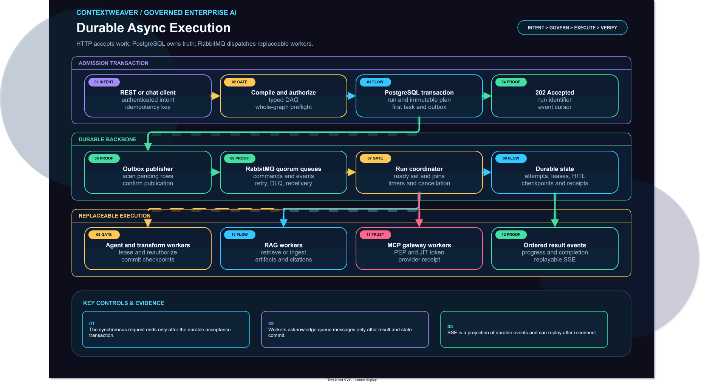
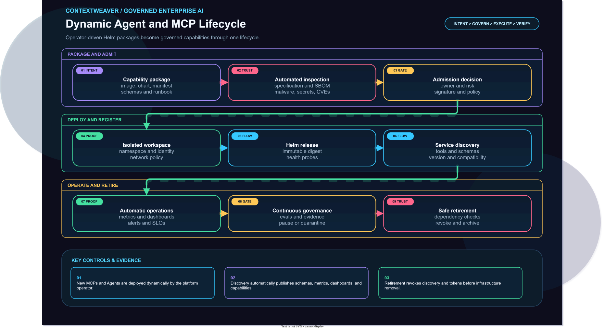
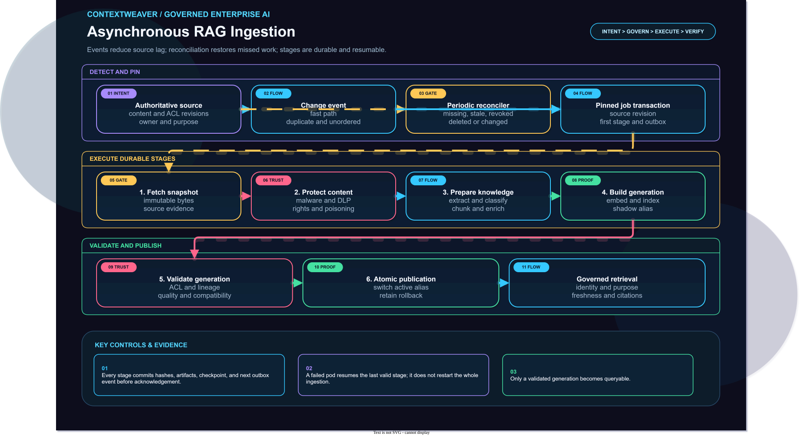

Identity, schema, and idempotency
The edge validates the caller and normalized typed request.
The old synchronous call-flow diagrams have been replaced by queue-mediated, resumable flows for execution, capability deployment, knowledge ingestion, and production operations.
The browser receives an accepted run and observes it. PostgreSQL, RabbitMQ, and replaceable workers own the actual execution.
The edge validates the caller and normalized typed request.
The compiler resolves versions, contracts, capabilities, policy, and budgets.
The run, immutable plan, initial task, and outbox record commit together.
RabbitMQ quorum queues deliver persistent commands to competing workers.
Agent, RAG, model, HITL, and MCP Gateway workers execute independently.
Inbox, artifacts, receipts, state, and next outbox records commit atomically.
Another worker continues after message redelivery or lease expiry.
SSE reconnects with ordered progress, approvals, graph state, and results.
Each preview opens the full viewer at the relevant architecture page.

Admission, transactional outbox, queues, workers, MCP effects, recovery, and replayable results.

Package, scan, validate, approve, sign, deploy through Helm, discover, observe, and retire.

Events plus reconciliation, durable stages, shadow generations, validation, atomic publication, and retrieval.

Entra, private edge, AKS planes, durable data, trusted gateways, RAG, operations, and dynamic capabilities.